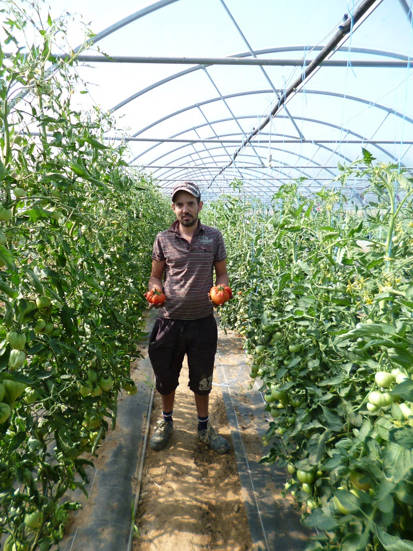

<div class="container mt-5">
    <div class="row mt-5">
        <div class="col-md-4 col-12">
            
        </div>
        <div class="col">
            <h3 class="mb-0 bold mt-4 mt-md-0">A propos</h3>
            <hr class="line">
            <br />
            <br/>
            <p class="mt-3">Depuis 2009, je vous propose la vente directe de fruits et légumes de producteur, de
                produits artisanaux fermiers ainsi que la livraison à domicile d’une gamme de paniers sélectionnés. Pour
                vous offrir une gamme complète, je travaille sur 3 axes complémentaires : Tout d’abord ma propre culture
                maraîchère de plein champ et sous abris froids (serres non chauffées) sur la commune de Saint-Priest –
                Manissieux (69800), que je complète avec un partenariat de producteurs locaux et nationaux pour les
                produits fermiers, les fruits et légumes que je ne produis pas. Enfin, je travaille également avec des
                coopératives étrangères et d’outre-mer pour les fruits exotiques tels que ananas, bananes …</p>
        </div>
    </div>
</div>